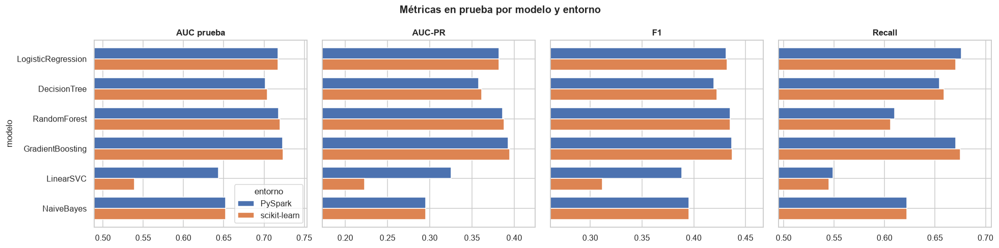
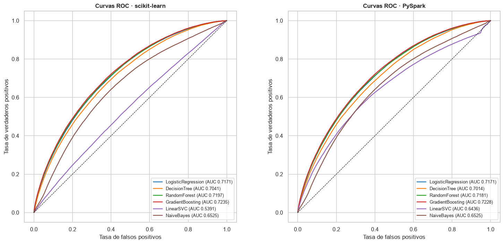
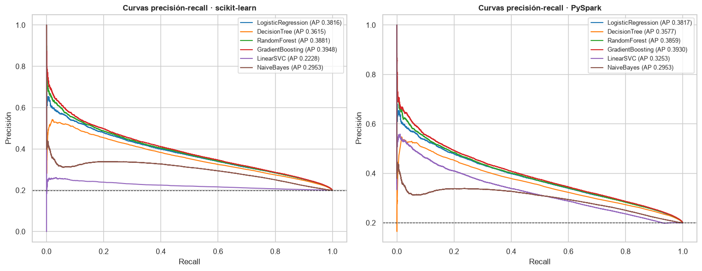
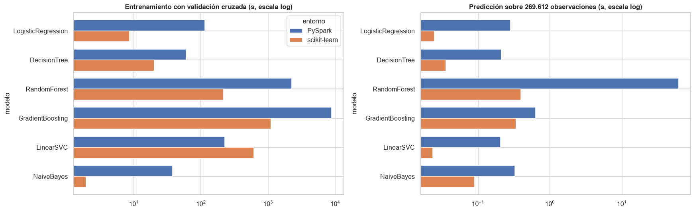
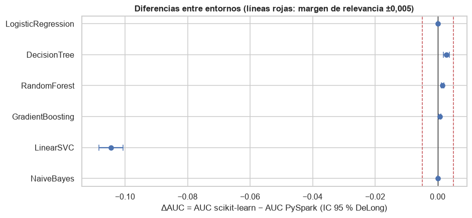
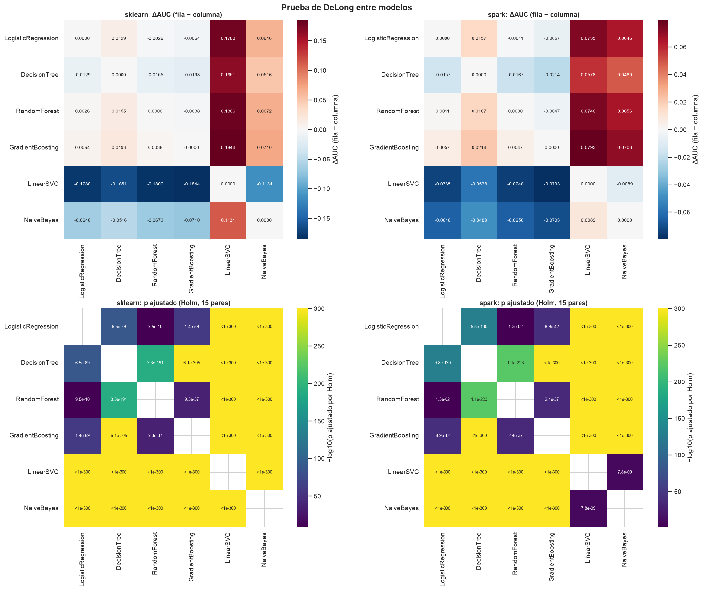

10. Comparación de resultados#
Sección 9.10.4.8 del enunciado. Este capítulo reúne en tablas y gráficos los resultados de los capítulos 6 a 8: métricas de los seis modelos en los dos entornos, tiempos de cómputo por etapa, curvas ROC y el resumen de las pruebas de DeLong, McNemar y bootstrap pareado.
import sys
import warnings
sys.path.insert(0, "../src")
warnings.filterwarnings("ignore")
import matplotlib.pyplot as plt
import numpy as np
import pandas as pd
import seaborn as sns
from sklearn.metrics import precision_recall_curve, roc_curve
import modelado as mo
import utils as u
u.estilo()
pd.set_option("display.max_columns", 30, "display.width", 200)
ENT = ("sklearn", "spark")
NOMBRE = {"sklearn": "scikit-learn", "spark": "PySpark"}
res = {e: {m: mo.cargar_resultado(e, m) for m in mo.ORDEN} for e in ENT}
pre = {e: u.cargar_json(u.RESULTADOS / f"{e}_preprocesamiento.json") for e in ENT}
punt = {e: mo.leer_puntuaciones(e) for e in ENT}
10.1 Métricas en el conjunto de prueba#
Umbral de Youden elegido con entrenamiento; AUC ROC y AUC-PR no dependen del umbral.
filas = []
for m in mo.ORDEN:
for e in ENT:
r = res[e][m]
mt = r["metricas_youden"]
filas.append({"modelo": m, "entorno": NOMBRE[e], "parámetros": str(r["mejores_parametros"]),
"AUC CV": r["auc_cv"], "AUC train": r["auc_train"], "AUC prueba": mt["auc_roc"],
"AUC-PR": mt["auc_pr"], "Accuracy": mt["accuracy"], "Precision": mt["precision"],
"Recall": mt["recall"], "F1": mt["f1"], "umbral": r["umbral_youden"]})
metr = pd.DataFrame(filas).set_index(["modelo", "entorno"])
metr.to_csv(u.RESULTADOS / "tabla_metricas.csv")
metr.round(4)
| parámetros | AUC CV | AUC train | AUC prueba | AUC-PR | Accuracy | Precision | Recall | F1 | umbral | ||
|---|---|---|---|---|---|---|---|---|---|---|---|
| modelo | entorno | ||||||||||
| LogisticRegression | scikit-learn | {'C': 0.009272592904426457} | 0.7166 | 0.7168 | 0.7171 | 0.3816 | 0.6478 | 0.3187 | 0.6704 | 0.4320 | 0.1926 |
| PySpark | {'regParam': 0.0001} | 0.7166 | 0.7168 | 0.7171 | 0.3817 | 0.6441 | 0.3169 | 0.6759 | 0.4315 | 0.1906 | |
| DecisionTree | scikit-learn | {'max_depth': 10} | 0.7024 | 0.7167 | 0.7041 | 0.3615 | 0.6403 | 0.3110 | 0.6589 | 0.4226 | 0.2003 |
| PySpark | {'maxDepth': 10} | 0.7016 | 0.7080 | 0.7014 | 0.3577 | 0.6380 | 0.3085 | 0.6542 | 0.4193 | 0.1999 | |
| RandomForest | scikit-learn | {'max_depth': 15, 'n_estimators': 100} | 0.7192 | 0.8066 | 0.7197 | 0.3881 | 0.6856 | 0.3393 | 0.6059 | 0.4350 | 0.2232 |
| PySpark | {'numTrees': 100, 'maxDepth': 15} | 0.7180 | 0.7959 | 0.7181 | 0.3859 | 0.6833 | 0.3380 | 0.6101 | 0.4350 | 0.2201 | |
| GradientBoosting | scikit-learn | {'max_depth': 5, 'n_estimators': 100} | 0.7231 | 0.7281 | 0.7235 | 0.3948 | 0.6529 | 0.3233 | 0.6749 | 0.4372 | 0.1985 |
| PySpark | {'maxIter': 100, 'maxDepth': 5} | 0.7221 | 0.7275 | 0.7228 | 0.3930 | 0.6547 | 0.3240 | 0.6704 | 0.4369 | 0.1980 | |
| LinearSVC | scikit-learn | {'C': 0.009272592904426457} | 0.5055 | 0.5392 | 0.5391 | 0.2228 | 0.5187 | 0.2181 | 0.5449 | 0.3115 | -1.0000 |
| PySpark | {'regParam': 1e-06} | 0.6499 | 0.6467 | 0.6436 | 0.3253 | 0.6548 | 0.3006 | 0.5487 | 0.3884 | -1.0000 | |
| NaiveBayes | scikit-learn | {} | 0.6526 | 0.6528 | 0.6525 | 0.2953 | 0.6199 | 0.2898 | 0.6220 | 0.3954 | 0.2115 |
| PySpark | {} | 0.6525 | 0.6528 | 0.6525 | 0.2953 | 0.6199 | 0.2898 | 0.6220 | 0.3954 | 0.2115 |
Los dos entornos producen modelos casi idénticos en desempeño: en los cinco modelos comparables la diferencia de AUC de prueba entre entornos es de 0,003 o menos, y el F1 difiere en menos de 0,004. La columna «AUC train» muestra el sobreajuste de los modelos de alta capacidad: el bosque de profundidad 15 alcanza 0,81 (scikit-learn) y 0,80 (PySpark) en entrenamiento frente a 0,72 en prueba, y aun así es el segundo mejor en prueba; el gradient boosting, más regularizado por su tasa de aprendizaje y su poca profundidad, se mantiene en 0,73 frente a 0,72. El de mejor desempeño discriminativo en ambos entornos es el gradient boosting (AUC 0,7235 en scikit-learn y 0,7228 en PySpark; AUC-PR 0,395 y 0,393), aunque en el umbral de Youden la mayor precisión (0,339 y 0,338) y la mayor exactitud (0,686 y 0,683) corresponden al bosque aleatorio, que marca menos préstamos como default.
fig, axes = plt.subplots(1, 4, figsize=(18, 4.5), sharey=True)
for ax, k in zip(axes, ["AUC prueba", "AUC-PR", "F1", "Recall"]):
t = metr[k].unstack("entorno").loc[mo.ORDEN]
t.plot.barh(ax=ax, color=["#4C72B0", "#DD8452"], width=0.75, legend=(k == "AUC prueba"))
ax.set_title(k)
ax.set_xlim(max(0, t.values.min() - 0.05), min(1, t.values.max() + 0.03))
ax.invert_yaxis()
fig.suptitle("Métricas en prueba por modelo y entorno", fontsize=13, weight="bold")
fig.tight_layout()
u.guardar_fig(fig, "10_metricas")
plt.show()

10.2 Curvas ROC (una figura por entorno)#
fig, axes = plt.subplots(1, 2, figsize=(14, 6.5))
colores = dict(zip(mo.ORDEN, sns.color_palette("tab10", 6)))
for ax, e in zip(axes, ENT):
y = punt[e]["default"].to_numpy()
for m in mo.ORDEN:
fpr, tpr, _ = roc_curve(y, punt[e][m])
ax.plot(fpr, tpr, color=colores[m], lw=1.6,
label=f"{m} (AUC {res[e][m]['metricas_youden']['auc_roc']:.4f})")
ax.plot([0, 1], [0, 1], "k--", lw=0.8)
ax.set_title(f"Curvas ROC · {NOMBRE[e]}")
ax.set_xlabel("Tasa de falsos positivos")
ax.set_ylabel("Tasa de verdaderos positivos")
ax.legend(loc="lower right", fontsize=8.5)
ax.set_aspect("equal")
fig.tight_layout()
u.guardar_fig(fig, "10_roc")
plt.show()

Las curvas ROC de los dos entornos son prácticamente superponibles para los cuatro mejores modelos, que forman un haz estrecho; Naive Bayes queda por debajo en todo el rango, y el SVM de scikit-learn sigue la diagonal, mientras que el de PySpark se separa de ella.
fig, axes = plt.subplots(1, 2, figsize=(14, 5.5))
for ax, e in zip(axes, ENT):
y = punt[e]["default"].to_numpy()
for m in mo.ORDEN:
pr, rc, _ = precision_recall_curve(y, punt[e][m])
ax.plot(rc, pr, color=colores[m], lw=1.4, label=f"{m} (AP {res[e][m]['metricas_youden']['auc_pr']:.4f})")
ax.axhline(y.mean(), color="k", ls="--", lw=0.8)
ax.set_title(f"Curvas precisión-recall · {NOMBRE[e]}")
ax.set_xlabel("Recall")
ax.set_ylabel("Precisión")
ax.legend(fontsize=8.5)
fig.tight_layout()
u.guardar_fig(fig, "10_pr")
plt.show()

filas = {}
for e in ENT:
for m in ["GradientBoosting", "RandomForest", "LogisticRegression"]:
pr, rc, _ = precision_recall_curve(punt[e]["default"], punt[e][m])
filas[(m, NOMBRE[e])] = pr[np.argmin(np.abs(rc - 0.5))]
pd.Series(filas, name="precisión con recall de 50 %").unstack().round(3)
| PySpark | scikit-learn | |
|---|---|---|
| GradientBoosting | 0.376 | 0.377 |
| LogisticRegression | 0.369 | 0.369 |
| RandomForest | 0.370 | 0.372 |
En las curvas precisión-recall, la línea punteada es la precisión de un clasificador aleatorio (0,20). A un recall de 50 % los tres mejores modelos alcanzan una precisión de 0,37 a 0,38 en ambos entornos: menos de dos de cada cinco préstamos señalados como riesgosos terminan en default.
10.3 Tiempos de cómputo#
Preprocesamiento: en ambos entornos, desde el CSV comprimido hasta la matriz de diseño de entrenamiento y prueba: lectura, filtro de préstamos cerrados, construcción de variables, unión con la partición común y ajuste/transformación del preprocesamiento (en PySpark, además, la materialización de la caché).
Entrenamiento con validación:
GridSearchCV.fit/CrossValidator.fit, incluido el reajuste del mejor modelo con todo el entrenamiento.Predicción: puntuaciones de las 269.612 observaciones de prueba (en Spark,
transform+ materialización).Transferencia: solo PySpark,
toPandas()deid,defaulty la puntuación.
filas = []
for m in mo.ORDEN:
for e in ENT:
r = res[e][m]
filas.append({"modelo": m, "entorno": NOMBRE[e], "ajustes": r["n_ajustes"],
"entrenamiento + CV (s)": r["t_entrenamiento_cv_s"], "predicción (s)": r["t_prediccion_s"],
"umbral en train (s)": r["t_umbral_s"], "evaluación (s)": r["t_evaluacion_s"],
"transferencia (s)": r.get("t_transferencia_s", np.nan)})
tiem = pd.DataFrame(filas).set_index(["modelo", "entorno"])
cociente = (tiem["entrenamiento + CV (s)"].xs("PySpark", level="entorno")
/ tiem["entrenamiento + CV (s)"].xs("scikit-learn", level="entorno"))
tiem.to_csv(u.RESULTADOS / "tabla_tiempos.csv")
print("Preprocesamiento: scikit-learn "
f"{pre['sklearn']['t_preprocesamiento_s']:.1f} s | PySpark {pre['spark']['t_preprocesamiento_s']:.1f} s")
tot = tiem.groupby("entorno")[["entrenamiento + CV (s)", "predicción (s)", "transferencia (s)"]].sum()
print("\nTotales por entorno (s):")
print(tot.round(1).to_string())
print("\nCociente de tiempo de entrenamiento + CV (PySpark / scikit-learn):")
print(cociente.round(2).to_string())
tiem.round(2)
Preprocesamiento: scikit-learn 17.6 s | PySpark 34.5 s
Totales por entorno (s):
entrenamiento + CV (s) predicción (s) transferencia (s)
entorno
PySpark 11494.9 62.9 55.2
scikit-learn 1966.8 0.9 0.0
Cociente de tiempo de entrenamiento + CV (PySpark / scikit-learn):
modelo
LogisticRegression 13.29
DecisionTree 3.00
RandomForest 10.47
GradientBoosting 7.97
LinearSVC 0.36
NaiveBayes 19.53
| ajustes | entrenamiento + CV (s) | predicción (s) | umbral en train (s) | evaluación (s) | transferencia (s) | ||
|---|---|---|---|---|---|---|---|
| modelo | entorno | ||||||
| LogisticRegression | scikit-learn | 10 | 8.55 | 0.02 | 0.09 | 0.20 | NaN |
| PySpark | 10 | 113.67 | 0.28 | 12.22 | 30.80 | 0.15 | |
| DecisionTree | scikit-learn | 10 | 20.00 | 0.04 | 0.12 | 0.17 | NaN |
| PySpark | 10 | 59.95 | 0.21 | 2.66 | 2.82 | 0.13 | |
| RandomForest | scikit-learn | 28 | 215.26 | 0.39 | 1.61 | 0.22 | NaN |
| PySpark | 28 | 2253.80 | 61.24 | 202.91 | 330.11 | 54.54 | |
| GradientBoosting | scikit-learn | 13 | 1104.89 | 0.34 | 1.38 | 0.20 | NaN |
| PySpark | 13 | 8805.13 | 0.63 | 18.64 | 35.89 | 0.09 | |
| LinearSVC | scikit-learn | 10 | 616.15 | 0.02 | 0.08 | 0.18 | NaN |
| PySpark | 10 | 224.60 | 0.20 | 15.38 | 38.05 | 0.16 | |
| NaiveBayes | scikit-learn | 4 | 1.93 | 0.09 | 0.32 | 0.20 | NaN |
| PySpark | 4 | 37.73 | 0.32 | 15.93 | 38.16 | 0.16 |
scikit-learn fue más rápido en cinco de los seis modelos: el entrenamiento con validación cruzada de los seis tomó 1.967 s (33 min) en scikit-learn y 11.495 s (3,2 h) en PySpark, 5,8 veces más. En los cinco modelos donde PySpark fue más lento, el cociente va de 3,0 (árbol) a 19,5 (Naive Bayes). La única excepción es el SVM lineal, donde PySpark fue 2,7 veces más rápido (225 s frente a 616 s): en scikit-learn los ajustes con \(C\) = 0,927 tardaron unos 600 s cada uno en converger cerca de la solución degenerada (capítulos 6 y 11), mientras que Spark limita su optimizador a 100 iteraciones. No es una ventaja del entorno sino del criterio de parada. El preprocesamiento también fue más rápido en scikit-learn (17,6 s frente a 34,5 s), y la predicción de las 269.612 observaciones tardó menos de 0,4 s en scikit-learn frente a 0,2-61 s en PySpark. Las etapas posteriores (umbral en entrenamiento y métricas distribuidas) suman en PySpark otros entre 5 y 533 s por modelo, frente a 0,3-1,8 s en scikit-learn. El capítulo 12 explica por qué.
fig, axes = plt.subplots(1, 2, figsize=(16, 5))
t = tiem["entrenamiento + CV (s)"].unstack("entorno").loc[mo.ORDEN]
t.plot.barh(ax=axes[0], color=["#DD8452", "#4C72B0"][::-1], width=0.75, logx=True)
axes[0].set_title("Entrenamiento con validación cruzada (s, escala log)")
axes[0].invert_yaxis()
t = tiem["predicción (s)"].unstack("entorno").loc[mo.ORDEN]
t.plot.barh(ax=axes[1], color=["#DD8452", "#4C72B0"][::-1], width=0.75, logx=True, legend=False)
axes[1].set_title("Predicción sobre 269.612 observaciones (s, escala log)")
axes[1].invert_yaxis()
fig.tight_layout()
u.guardar_fig(fig, "10_tiempos")
plt.show()

10.4 Resumen de las pruebas estadísticas#
DeLong entre entornos#
de = pd.read_csv(u.RESULTADOS / "delong_entre_entornos.csv")
de["IC 95 % ΔAUC"] = de.apply(lambda r: f"[{r['delta_inf']:+.4f}, {r['delta_sup']:+.4f}]", axis=1)
de["modelo"] = de["modelo_1"].str.split(" ").str[0]
de.set_index("modelo")[["auc1", "auc2", "delta", "IC 95 % ΔAUC", "z", "p_holm", "significativa",
"relevante (|Δ| ≥ 0,005)"]].rename(
columns={"auc1": "AUC scikit-learn", "auc2": "AUC PySpark"}).round(5)
| AUC scikit-learn | AUC PySpark | delta | IC 95 % ΔAUC | z | p_holm | significativa | relevante (|Δ| ≥ 0,005) | |
|---|---|---|---|---|---|---|---|---|
| modelo | ||||||||
| LogisticRegression | 0.71709 | 0.71710 | -0.00001 | [-0.0000, +0.0000] | -0.71977 | 0.94333 | False | False |
| DecisionTree | 0.70415 | 0.70141 | 0.00274 | [+0.0017, +0.0037] | 5.42500 | 0.00000 | True | False |
| RandomForest | 0.71968 | 0.71815 | 0.00153 | [+0.0011, +0.0020] | 6.96213 | 0.00000 | True | False |
| GradientBoosting | 0.72349 | 0.72283 | 0.00066 | [+0.0002, +0.0011] | 2.97442 | 0.00881 | True | False |
| LinearSVC | 0.53908 | 0.64357 | -0.10449 | [-0.1083, -0.1007] | -53.78500 | 0.00000 | True | True |
| NaiveBayes | 0.65251 | 0.65251 | 0.00000 | [-0.0000, +0.0000] | 0.68152 | 0.94333 | False | False |
fig, ax = plt.subplots(figsize=(9, 4))
d = de.set_index("modelo").loc[mo.ORDEN]
ax.errorbar(d["delta"], range(len(d)), xerr=[d["delta"] - d["delta_inf"], d["delta_sup"] - d["delta"]],
fmt="o", color="#4C72B0", capsize=4)
for x in (-0.005, 0.005):
ax.axvline(x, color="#C44E52", ls="--", lw=1)
ax.axvline(0, color="k", lw=0.8)
ax.set_yticks(range(len(d)))
ax.set_yticklabels(d.index)
ax.invert_yaxis()
ax.set_xlabel("ΔAUC = AUC scikit-learn − AUC PySpark (IC 95 % DeLong)")
ax.set_title("Diferencias entre entornos (líneas rojas: margen de relevancia ±0,005)")
u.guardar_fig(fig, "10_delong_entornos")
plt.show()

Todos los intervalos, salvo el del SVM, caen dentro de la franja de ±0,005: las diferencias entre entornos son estadísticamente detectables en tres modelos, pero irrelevantes en la práctica.
Mapas de calor de DeLong entre modelos#

DeLong, McNemar y bootstrap pareado#
pd.read_csv(u.RESULTADOS / "resumen_tres_pruebas.csv")
| familia | comparación | ΔAUC | DeLong | McNemar | Bootstrap ΔAUC | Bootstrap ΔAUC-PR | Bootstrap ΔF1 | |
|---|---|---|---|---|---|---|---|---|
| 0 | entre entornos | LogisticRegression (sklearn) vs LogisticRegres... | -0.0000 | no | sí | no | sí (no relevante) | sí (no relevante) |
| 1 | entre entornos | DecisionTree (sklearn) vs DecisionTree (spark) | 0.0027 | sí (no relevante) | sí | sí (no relevante) | sí (no relevante) | sí (no relevante) |
| 2 | entre entornos | RandomForest (sklearn) vs RandomForest (spark) | 0.0015 | sí (no relevante) | sí | sí (no relevante) | sí (no relevante) | no |
| 3 | entre entornos | GradientBoosting (sklearn) vs GradientBoosting... | 0.0007 | sí (no relevante) | sí | sí (no relevante) | sí (no relevante) | no |
| 4 | entre entornos | LinearSVC (sklearn) vs LinearSVC (spark) | -0.1045 | sí (relevante) | sí | sí (relevante) | sí (relevante) | sí (relevante) |
| 5 | entre entornos | NaiveBayes (sklearn) vs NaiveBayes (spark) | 0.0000 | no | no | no | no | no |
| 6 | mejores modelos | GradientBoosting (sklearn) vs RandomForest (sk... | 0.0038 | sí (no relevante) | sí | sí (no relevante) | sí (relevante) | sí (no relevante) |
| 7 | mejores modelos | GradientBoosting (spark) vs RandomForest (spark) | 0.0047 | sí (no relevante) | sí | sí (no relevante) | sí (relevante) | sí (no relevante) |
La tabla resume el capítulo 8. DeLong y el bootstrap coinciden en que el SVM es la única diferencia relevante entre entornos; McNemar, que no evalúa relevancia, rechaza la igualdad de errores en cinco de las seis comparaciones (todas salvo Naive Bayes). DeLong y el bootstrap coinciden también en que el gradient boosting supera al bosque dentro de cada entorno, mientras que McNemar es significativo en sentido contrario (el bosque comete menos errores en su umbral). En la regresión logística entre entornos, DeLong y el bootstrap del AUC no detectan diferencia, pero McNemar y el bootstrap de AUC-PR y F1 sí, aunque irrelevante (ΔAUC-PR = −0,0001; ΔF1 = 0,0006), por la pequeña diferencia de umbrales.